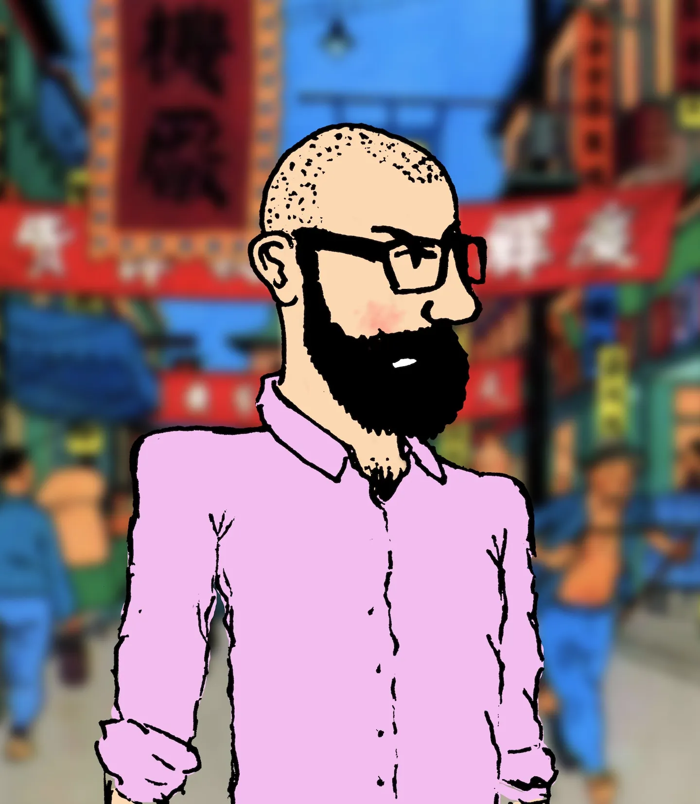
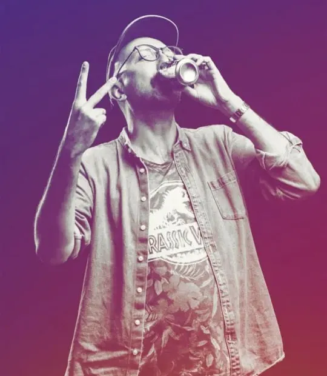

Hi, I'm Angus McBryde.
I am a Graphic Designer, a Performing Arts Marketer, a Cyclist, a Web3 Enthusiast, a Tech Tinkerer and occasionally a broadcaster and a musician from Dunedin, New Zealand. I currently live in Manchester, UK with my wife Nadia and our two daughters.
I am Head of Marketing & Communications at Band on the Wall, a legendary Manchester music venue.
I graduated from the University of Otago in 2010 with a Bachelor of Consumer and Applied Science focused in Interdisciplinary Design Studies, and began my career as a graphic designer, with the conviction that a great designer's style should always serve the client's needs rather than the other way around. After two and a half years agency-side, I moved into marketing and design roles across the performing arts and events sector.
My experience includes senior marketing, communications and design roles with Dunedin Arts Festival, Dunedin Fringe Festival, New Zealand International Science Festival, Auckland Arts Festival, and Whānau Marama: New Zealand International Film Festival.
From 2018–2021, I was a founding board member and the Design & Marketing Manager of award-winning theatre company Arcade. During this period I also co-hosted the History Bonanza on Radio One 91FM with Alex D. Wilson.
From 2015 to 2017, I travelled extensively through South-East Asia, India, Eastern & Western Europe, the UK, North Africa and the United States, settling for a spell in Liverpool, UK. During this time, I embarked on two solo cycle tours of The Netherlands and France, and hitchhiked around Ireland and Romania. Throughout my travels in Europe, the UK and the United States, I almost exclusively stayed with locals via Couchsurfing and Warm Showers, which I found to be an incredibly rewarding way to travel. A bike has always been my vehicle of choice in daily life.
I have played the bass guitar in indie-folk quintet The Broken Heartbreakers and noise-pop quartet Asta Rangu, and released a solo record, Of No Particular Significance, in 2017.
I am convinced that the philosophy and application of Web3 and decentralised technology represents a genuinely different way of thinking about ownership and power in an increasingly monopolised digital world. I'm also a compulsive tinkerer, forever poking at new tools, platforms and technologies to see what they can do.
Wanna talk? Email me!